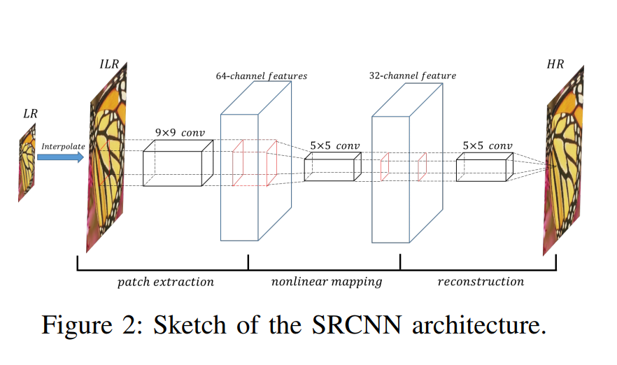
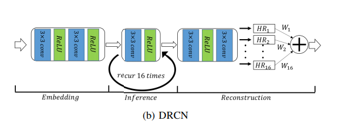
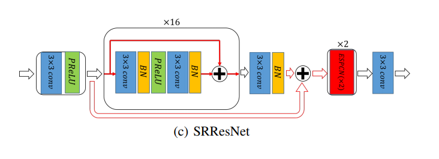
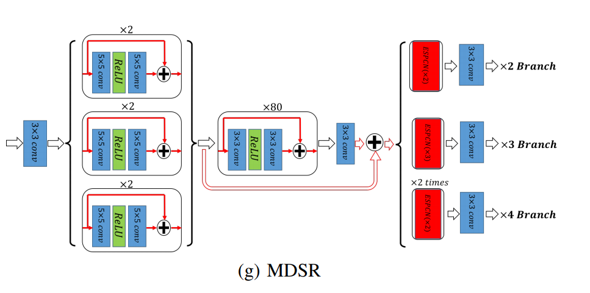
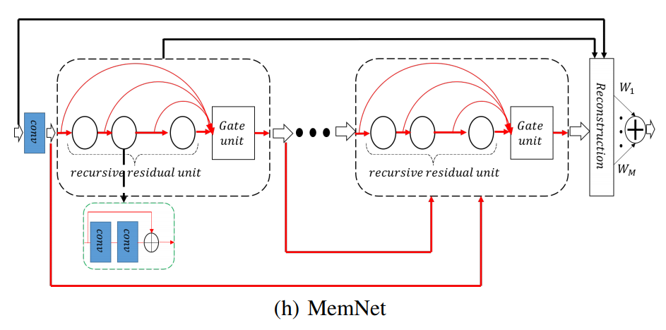
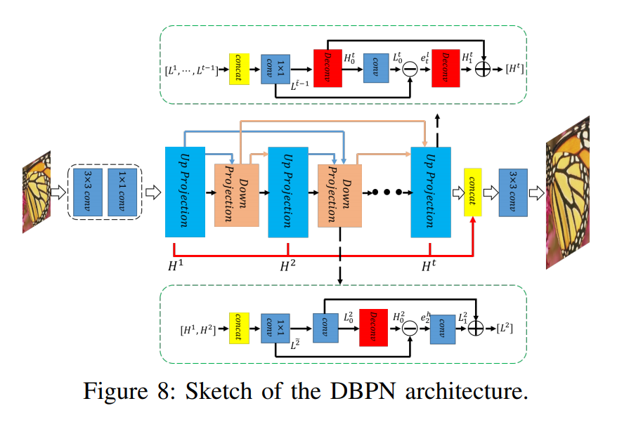

使用深度学习进行超分辨率发展历史总结
paper link： https://arxiv.org/abs/1808.03344
这是一篇综述性的文章发表在TMM上，文章总结了自SRCNN以来超分辨率在深度学习上的发展情况
Introduction
深度学习是机器学习的分支，在人工智能领域，深度学习表现出比普通机器学习方法更好的表现效果
超分辨率的一个众所周知的问题就是不适定问题，因为讲低分辨率映射到高分辨率是很困难的。先前的 SISR （ Single Image Super-Resolution ）方法有两个主要缺点：
- 不能明确定义从低分辨率到高分辨率之见的映射
- 用原生数据建立一个复杂的高维映射是很低效的
不过近几年基于深度学习的超分辨率不论从质量和数量上都有很高的提升
在本论文中作者会对近来基于DL的SISR的算法进行一个大体的review，我们主要关注两个方面：
- SISR设计的高效的神经网络架构
- 高效求解最优解
Background
Single Image Super-Resolution
超分辨率的工作从重建一个或者多个低分图像重建高分图像。从输入数量来分，超分可以分为单图超分 single image superresolution (SISR) 和多图超分multi-image super-resolution (MISR) 。超分图像在很多领域有很宽泛的用处。图一定义了低分图像模型


y = (x ⊗ k)↓s + n,
- y表示低分图像LR
- x为高分图像
- k为模糊核
- ⊗代表卷积操作
- ↓s代表下采样操作的规模
- n为独立的噪声参数
这样定义或造成不适定 ill-posed 问题，因为一个低分图像可能会对应多个高分图像。至今主流的SISR算法可以分成三个方向：
基于插值的技术
- 最邻近元法
- 双线性内插法
- 三次内插反
双立方插值和Lanczos resampling方法处理起来很快但是会有精确度的缺点
基于重建的方法（概率论/几何论）
- 凸集投影法
- 贝叶斯分析法
- 迭代反投影法
- 后验概率
- 正规化法
这类方法通常采用复杂的先验知识可以很好地保留细节信息，但是当规模增加时表现就会急剧下降，而且这类方法通常很耗费时间。
基于学习的方法
- Example-based
- 邻域嵌入
- 支持向量回归方法
- 稀疏表示法
基于学习的方法因为其快速杰出的表现获得了关注通常使用ML学习的方法去分析LR和HR之见的数据关系。 Markov random field (MRF) 马尔科夫随机场模型是第一个用丰富的现实图像合成视觉效果良好图像的方法。之后又有许多方法被提出来用于处理SISR问题。近来基于DL的SISR算法获得了比传统基于重建方法和基于学习的方法更好的表现效果
Deep Learning
Deep Architecture For SISR
在这部分会主要讨论SISR的一些DL网络结构
SRCNN


作者选用SRCNN模型作为benchmark，SRCNN是一个三层的卷进神经网络，每一层的卷积核分别为64×1×9×9，32×64×5×5， 1 × 32 × 5 × 5 ，损失函数采用 the mean square error (MSE) 均方误差。
尽管SRCNN当时很成功但是存在的以下问题激发了以后研究更高效的模型：
输入SRCNN的图像是双立方插值之后的图像，是很接近高分图像的
- 可能引起更深的图像结构错误计算
- 使用插值预处理耗费时间
- 当下采样scale未知时，使用特定的内插输入是不合理的
我们能否直接使用LR图像作为神经网络的输入直接实现端到端的学习。
SRCNN只是一个三层的网络架构，更复杂的网络结构是否能实现更好的效果
反映HR图像性质的损失函数中的先验项是微不足道的 ，能否整合SISR的参数到其他的网络或者其他SISR算法上去
FSRCNN
FSRCNN是第一个使用反卷积层从LR的feature map进行HR重建工作的算法。使用反卷机层有两个主要优点：
- 一是减少了计算量，因为我们只需要在网络的末端增加分辨率
- 解决了下采样核未知的问题
反卷积层的结构如下


ESPCN
普通的反卷积层已经被整合到很多开源的包比如Caffe和TensorFlow，可以用来解决第一个问题。但是仍然存在问题： 当我们使用最近邻插值时，上采样特征中的点在每个方向重复了好几次，这些像素信息其实是冗余的。因此提出了ESPCN模型


不是像反卷积层那样就通过简单增加feather map来提高分辨率，ESPCN增加了输出特征的通道数来存储额外的像素点来提高分辨率然后重新排列这些像素点并通过特殊的映射来获得HR输出。因为像素的扩展是在通道这个维度上所以用较小的卷积核就足够了。更进一步研究表明如果像素周围用0亚像素填充，那么反卷积层可以被简化成ESPCN的亚像素卷积
VDSR
在深度学习中，一般来说更深的神经网络有助于提高表现能力，许多工作专注于增加网络深度上。VDSR就是一个使用深度神经网络处理SISR问题的模型

 )
)
VDSR是一个20层的VGG-net模型，VGG-net网络中把所有卷积核设置成3×3。为了训练这个深度模型，作者把一开始的learning rate设置的很高，让模型加速收敛，并且使用了梯度裁剪去避免梯度爆炸的问题。VDSR主要做出了以下两个贡献：
可以将一个模型用于多尺寸
作者利用了和SRCNN一样的预处理方法作为模型的输入，但是VDSR使用了不同scale的预处理图片一起训练，大scale的因子能为小scale的训练提供更有用的信息。
使用了残差学习
作者认为学习双立方到残差之间的映射能提升表现能力并且能加速收敛。
DRCN
为了减少VDSR中的参数提出了DRCN模型，使用了和VDSR一样的卷积核和非线性函数——ReLU。为了克服训练深度循环卷积网络的困难，使用了多监督策略。作者使用16次循环卷积网络，每次卷积的到一个结果，最后结果可以看成16个中间结果的加权平均，因此加权的系数和为1。最终DRCN和VDSR有相似的表现性能


DRCN使用的多监督训练是很重要的，这种策略不仅创建了一个在反向传播过程中梯度平滑传播的最短路径而且还使用了中间的HR图像帮助重建最终图像，虽然这种融合确实产生了完美的效果，但是这种方法仍然有两个缺点：
- 一旦权重被确定了，在训练的过程中对于不同的输入也不会改变
- 使用单一的权重没有考虑到像素之见的差异，最好以自适应的方式区别地设置权重。
SRResNet
像VGG-net那样简单增加网络深度变的愈加困难，各种基于跳跃连接的深度模型可以变得极其深，在许多任务中获得了 state-of-the-art效果。其中ResNet是最具代表的模型。SRResNet就是基于ResNet应用在超分任务上的模型，16个残差单元（每一个单元包含两个带有残差学习的卷积）每一个单元中的批标准化batch normalization (BN) 是为了稳定训练过程


DRRN
DRRN也是一个基于残差网络的模型。


EDSR
EDSR模型带来了三个改进：
移除了原来残差网络中的BN
残差网络中的BN是为了做分类使用的，在例如SISR的图对图的任务中，因为输入和输出是强关联的，在网络收敛不是成问题的情况下，加入BN是会影响性能的。
除了有规律的深度增加外，EDSR还在很大程度上增加了每一层的输出特征数。
使用了残差缩放，克服宽的残差网络训练带来的困难。
作者在训练×3，和×4的网络时，使用预训练的×2的参数。这种预训练策略加速了训练速度，提升了最终表现能力


MDSR
这种高效的预训练策略意味着模型在应对不同scale的任务的时候中间的一些参数可能是相同的。
为了深入研究这种方法EDSR的作者提出了MDSR，可以想VDSR那样处理多尺寸图像。
在MDSR中，用于非线性映射的卷积核在不同尺度上是共享的，只有用于提取特征的前卷积核和最终的亚像素上采样卷积是不同的。训练MDSR每次更新时，随机选择×2、×3、×4的minibatch，只更新MDSR的相应部分。


SRDenseNet
DenseNet也是一个基于跳跃链接的高效的网络架构。 在DenseNet中，每个层都与前面的所有表示连接， 单元和块使用bottleneck layers，以减少参数的数量 。ResNet可以让参数重复利用，DenseNet可以支持新特性探索。SRDenseNet基于DenseNet在反卷积层之前，连接来自不同块的所有特征，结果表明，这种方法可以有效地提高性能


MemNet
MemNet 使用 递归残差单元替换掉DenseNet block中的普通卷积单元，增加了不同block之间的连接。 作者解释说，同一block内的局部连接类似于短期记忆，不同block的连接类似于长期记忆[


RDN
在RDN中基本的卷积单元是稠密连接在一起的类似DenseNet，在RDN块的末尾使用一个bottleneck layer，所有的block使用残差学习。在重建部分之前先前所有的特征使用稠密链接和残差学习融合
SCN&CSCN（稀疏编码）
稀疏先验（spare prior）在自然图像处理中被广泛用于提高表现能力上，SCN使用 learned iterative shrinkage and thresholding algorithm (LISTA) —— 一种基于神经网络的稀疏编码近似估计方法 ，去解决传统的稀疏编码（ sparse coding ）在SISR上的耗时推理问题
CSCN是SCN的级联版本，它使用了多重的SCN。
SCN创新性的吧稀疏编码和卷积神经网络结合起来，获得了数量和质量的提升。
MSCN（集成学习）
不同的模型针对不同的SISR图像模式。从集成学习的角度来看，可以集成不同的模型可以获得更好的效果。MSCN就是受这种设想启发被提出来，在CNN基础上开发一个额外的模块，LR作为输入，输出多个相同shape的tensor作为HR。对于每一个原始的HR输出，这些tensor可以被视为自适应的 elementwise 权重。 在MSCN中，每个像素的系数总和不是1，这看起来有点违和。
DEGREE
结合了subband reconstruction和ResNet的优点。 在每个残差块中学习到的残差可以用来重建高频细节。 为了模拟subband reconstruction，使用了递归残差块 。 与传统的 supervised subband 恢复方法相比，需要通过不同的filters获得 subband ground truth。 受益于端到端表示学习，此模拟使用递归ResNet避免显式估计中间subband组件。
LapSRN
逐步生成不同尺度的SR。
小scale模型可用于大scale SISR的原始估计。大scale的SISR长期以来是一个非常有挑战性的问题。 解决这个问题的一个简单的方法是通过增加对辅助程序的额外监督来逐步提高分辨率 。
LapSRN使用拉普拉斯算子的金字塔（Laplacian pyramid）结构去重建HR输出。LapSRN如图有两个branch：
- 特征提取branch
- 图像重建branch


对于每一个scale，图像重建branch估计当前阶段的原始HR输出， 特征提取branch输出原始估计量和相应的 ground truth之间的残差，并为下一阶段提取有用的表示。
PixelSR
利用条件自回归模型逐像素生成SR
当面临大scale factor严重的必要细节丢失的时，一些研究者认为整合合理的细节可以实现更好的结果。PixelRNN和PixelCNN是今年代表性的自回归生成模型。 PixelRNN和PixelCNN中的当前像素依赖于已经生成的左侧和顶部像素 。
PixelSR是第一个应用PixelCNN来处理SISR的模型


最终的HR使用softmax处理两部分结果来生成
- x是低分输入
- yi是待生成的高分像素
- Ai表示 conditioning network 预测一个与可能值对应的logit值的向量
- Bi表示预测第i个输出像素的logit值向量的先验网络
通过最小化模型预测与离散的 ground-truth 标签之间的交叉熵损失(最大化相应的对数的似然)来优化整个网络。
DBPN
迭代反投影 backprojection是一种早期的SR算法，它迭代计算重构误差然后反馈以调整HR结果。 DBPN利用深度架构模拟迭代反投影，进一步提高了密集连接的性能，在×8尺度下表现出了良好的性能。


SFT-GAN & SRMD
IRCNN
作者利用深度网络学习一组图像先验，然后将先验插入重建框架;这些情况下的实验结果比仅采用基于实例的训练的现代方法要好。